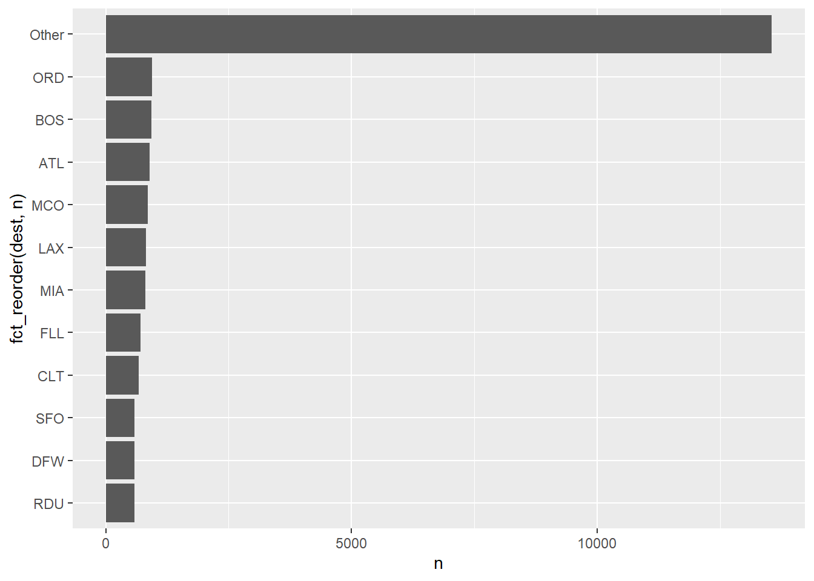
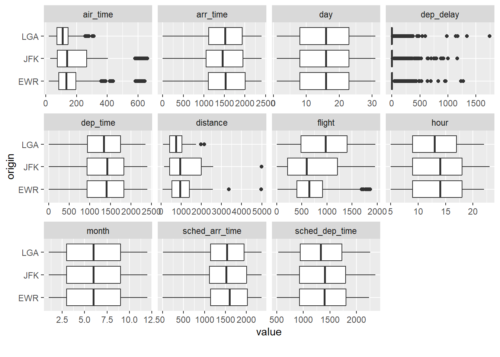

library("tidymodels") # Train- und Test-Sample aufteilen
library("tidyverse") # data wrangling
library("conflicted") # Name clashes finden
library("easystats") # stats made easyflights-delay
lm
regression
interaction
yacsda
1 Hintergrund und Forschungsfrage
Wir untersuchen die Forschungsfrage Was sind Prädiktoren von Flugverspätungen. Dazu nutzen wir lineare Modelle als Modellierungsmethoden.
Dieser Post knüpft an den Post zur explorativen Datenanalyse der Flugverspätungen an (es gibt auch hier, Teil 1 und hier, Teil 2 ein Video zu diesem EDA-Post).
2 Setup
2.1 Pakete laden
Wirklich wichtig sind nur tidymodels und tidyverse. Die restlichen Pakete werden nur am Rande benötigt. Man sollte auch nur die Pakete laden, die man für die Analyse benötigt.
2.2 Daten laden: Flights 2023
Aus Gründen der Datenökonomie nutzen wir eine kleinere Version des Datensatz flights. Wir nutzen nicht mehr die Daten aus dem 2013, sondern die neueren Daten aus dem Jahr 2023.
library(nycflights23)
data(flights)
set.seed(42) # Reproduzierbarkeit
flights <-
flights |>
sample_n(size = 3e4)Achtung: flights ist recht groß; die Regressionsmodelle können leicht ein paar Hundert Megabyte groß werden. Das bringt u.U. auch einen modernen Computer irgendwann ins Straucheln.
3 flights2: Nicht benötigte Variablen entfernen und ID hinzufügen
flights2 <-
flights %>%
select(-c(year, arr_delay)) %>%
drop_na(dep_delay) %>%
mutate(id = row_number()) %>%
select(id, everything()) # id nach vorne ziehen4 Aufteilung in Train- und Testsample
Der Hintergrund zur Idee der Aufteilung in Train- und Test-Stichprobe kann z.b. hier oder hier, Kapitel 15, nachgelesen werden.
flights_split <- initial_split(flights2,
strata = dep_delay)5 flights_train2, flights_test2
set.seed(42) # Reproduzierbarkeit
flights_train2 <- training(flights_split)
flights_test2 <- testing(flights_split)Die “wirkliche Welt” (was immer das ist) besorgt die Aufteilung von Train- und Test-Sampel für Sie automatisch. Sagen wir, Sie arbeiten für die Flughafen-Aufsicht von New York. Dann haben Sie einen Erfahrungsschatz an Flügen aus der Vergangenheit in Ihrer Datenbank (Train-Sample). Einige Tages kommt Ihr Chef zu Ihnen und sagt: “Rechnen Sie mir mal die zu erwartende Verspätung der Flüge im nächsten Monat aus!”. Da heute nicht klar ist, wie die Verspätung der Flüge in der Zukunft (nächsten Monat) sein wird, stellen die Flüge des nächsten Monats das Test-Sample dar.
Übrigens: In der Prüfung besorgt das Aufteilen von Train- und Test-Sample netterweise Ihr Dozent…
6 lm0: Nullmodell
Eigentlich nicht nötig, das Nullmodell, primär aus didaktischen Gründen berechnet, um zu zeigen, dass in diesem Fall \(R^2\) wirklich gleich Null ist.
lm0 <- lm(dep_delay ~ 1, data = flights_train2)
model_parameters(lm0) # model_parameters zeit die (geschätzten) Regressionsgewichte (Betas)Parameter | Coefficient | SE | 95% CI | t(21918) | p
---------------------------------------------------------------------
(Intercept) | 13.89 | 0.37 | [13.16, 14.63] | 37.18 | < .001Wir könnten anstatt model_parameters auch parameters nutzen; das ist der gleiche Befehl.
Allerdings gibt es den Befehl parameters in zwei Paketen, es käme also zu einem “Name Clash”. Das umgehen wir, indem wir model_parameter nutzen, und nicht parameters.
7 lm1: origin
lm1 <- lm(dep_delay ~ origin, data = flights_train2)
model_parameters(lm1) Parameter | Coefficient | SE | 95% CI | t(21916) | p
----------------------------------------------------------------------
(Intercept) | 15.11 | 0.66 | [13.82, 16.40] | 22.98 | < .001
origin [JFK] | 1.37 | 0.94 | [-0.47, 3.21] | 1.46 | 0.145
origin [LGA] | -4.42 | 0.90 | [-6.19, -2.66] | -4.92 | < .001Man vergleiche:
flights_train2 %>%
drop_na(dep_delay) %>%
group_by(origin) %>%
summarise(delay_avg = mean(dep_delay)) %>%
mutate(delay_delta = delay_avg - delay_avg[1])# A tibble: 3 × 3
origin delay_avg delay_delta
<chr> <dbl> <dbl>
1 EWR 15.1 0
2 JFK 16.5 1.37
3 LGA 10.7 -4.42Der Mittelwertsvergleich und das Modell lm1 sind faktisch informationsgleich.
Aber leider ist es um die Modellgüte nicht so gut bestellt (eigentlich eher “grottenschlecht”):
r2(lm1)# R2 for Linear Regression
R2: 0.002
adj. R2: 0.002lm1 ist so schlecht, wir löschen es gleich wieder… ::: {.cell}
rm(lm1):::
8 lm2: All in
# NICHT AUSFÜHREN
#lm2_all_in <- lm(dep_delay ~ ., data = flights_train2)Modell lm2_all_in ist hier keine gute Idee, da nominale Prädiktoren in Indikatorvariablen umgewandelt werden. Hat ein nominaler Prädiktor sehr viele Stufen (wie hier), so resultieren sehr viele Indikatorvariablen, was dem Regressionsmodell Probleme bereiten kann (bei mir hängt sich R auf). Besser ist es in dem Fall, die Anzahl der Stufen von nominalskalierten Variablen vorab zu begrenzen.
Bei kleineren Datensätzen (weniger Variablen, weniger Fälle) lohnt es sich aber oft, das “All-in-Modell” auszuprobieren, als Referenzmaßstab für andere Modelle.
9 flights_train3: Textvariablen in Faktorvariablen umwandeln
Begrenzen wir zunächst die Anzahl der Stufen der nominal skalierten Variablen:
flights_train3 <-
flights_train2 %>%
mutate(across(
.cols = where(is.character),
.fns = as.factor))Wem das across zu kompliziert ist, der kann auch alternativ (synonym) jede Variable einzeln in einen Faktor umwandeln und zwar so:
flights_train3a <-
flights_train2 %>%
mutate(tailnum = as.factor(tailnum),
origin = as.factor(origin),
dest = as.factor(dest),
carrier = as.factor(carrier)
)Das ist einfacher als mit across, aber dafür mehr Tipperei.
Wir müssen die Transformationen, die wir auf das Train-Sample anwenden, auch auf das Test-Sample anwenden:
10 flights_test3
flights_test3 <-
flights_test2 %>%
mutate(across(
.cols = where(is.character),
.fns = as.factor))flights_train3 %>%
select(where(is.factor)) %>%
names()[1] "carrier" "tailnum" "origin" "dest" Z.B. dest hat viele Stufen:
flights_train3 %>%
count(dest, sort = TRUE)# A tibble: 116 × 2
dest n
<fct> <int>
1 ORD 941
2 BOS 933
3 ATL 890
4 MCO 860
5 LAX 816
6 MIA 806
7 FLL 707
8 CLT 673
9 SFO 588
10 DFW 581
# ℹ 106 more rowsflights_train3 %>%
count(dest) %>%
ggplot() +
aes(y = fct_reorder(dest, n), x = n) +
geom_col()11 flights_train4: Faktorstufen zusammenfassen
flights_train4 <-
flights_train3 %>%
mutate(across(
.cols = where(is.factor),
.fns = fct_lump_prop, prop = .025
))12 Variante mit fact_lump_n
Sinngemäß bedeutet das:
“Fasse die Faktorstufen von dest zu 8 Gruppen plus einer ‘Lumpensammler-Kategorie’ zusammen.”
flights_train3 %>%
mutate(dest_lump9 = fct_lump_n(dest, n = 8)
)# A tibble: 21,919 × 19
id month day dep_time sched_dep_time dep_delay arr_time sched_arr_time
<int> <int> <int> <int> <int> <dbl> <int> <int>
1 11 2 22 622 630 -8 1034 1020
2 26 9 27 1137 1147 -10 1255 1317
3 28 10 8 1751 1759 -8 2106 2110
4 37 3 30 807 815 -8 917 930
5 39 6 14 1019 1025 -6 1127 1151
6 47 9 26 1045 1051 -6 1345 1357
7 52 5 9 749 759 -10 1009 1014
8 55 2 10 914 920 -6 1044 1115
9 59 12 30 1402 1411 -9 1715 1724
10 61 11 10 1434 1440 -6 1623 1641
# ℹ 21,909 more rows
# ℹ 11 more variables: carrier <fct>, flight <int>, tailnum <fct>,
# origin <fct>, dest <fct>, air_time <dbl>, distance <dbl>, hour <dbl>,
# minute <dbl>, time_hour <dttm>, dest_lump9 <fct>Hier sind die Faktorstufen von dest:
flights_train4$dest |> levels() [1] "ATL" "BOS" "CLT" "DFW" "FLL" "LAX" "MCO" "MIA" "ORD"
[10] "RDU" "SFO" "Other"Visusalsieren wir die Häufigkeit der Faktorstufen:
flights_train4 %>%
count(dest) %>%
ggplot() +
aes(y = fct_reorder(dest, n), x = n) +
geom_col()
13 flights_test4
Vergessen wir nicht, die Transformation auch auf das Test-Sample anzuwenden:
flights_test4 <-
flights_test3 %>%
mutate(across(
.cols = where(is.factor),
.fns = fct_lump_prop, prop = .025
))Wichtig! Im Alle Faktorstufen, die im Test-Set vorkommen, müssen auch im Train-Set vorkommen. Sonst können wir das Regressionsmodell nicht berechnen.
levels(flights_test4$dest) [1] "ATL" "BOS" "CLT" "DFW" "FLL" "LAX" "MCO" "MIA" "ORD"
[10] "Other"levels(flights_train4$dest) [1] "ATL" "BOS" "CLT" "DFW" "FLL" "LAX" "MCO" "MIA" "ORD"
[10] "RDU" "SFO" "Other"Das sieht gut aus: Alle Faktorstufen im Test-Set sind im Train-Set enthalten.
14 lm3: Alle zusammengefassten Faktorvariablen
lm3 <- flights_train4 %>%
select(dep_delay, where(is.factor), -tailnum, -id) %>%
lm(dep_delay ~ ., data = .)Achtung! Falls ein Faktor nur über eine einzige Faktorstufe verfügt, wird das Regressionsmodell zusammenbrechen mit einer Fehlermeldung. Adios!
Der Punkt bei dep_delay ~ . meint “nimm alle Variablen im Datensatz (bis auf dep_delay)”.
Der Punkt bei data = . nimm die Tabelle, wie sie dir im letzten Schritt mundgerecht aufbereitet wurde. Man hätte hier auch flights_train4 schreiben können, aber dann hätten wir noch tailnum etc. entfernen müssen.
Eigentlich brauchen wir nicht so viele Dezimalstellen …
options(digits = 2)model_parameters(lm3) # Modellkoeffizienten, also die Beta-Gewichte ("estimate")Parameter | Coefficient | SE | 95% CI | t(21897) | p
-------------------------------------------------------------------------
(Intercept) | 8.87 | 2.44 | [ 4.09, 13.66] | 3.63 | < .001
carrier [AA] | 4.76 | 1.85 | [ 1.13, 8.38] | 2.57 | 0.010
carrier [B6] | 15.25 | 1.53 | [12.24, 18.25] | 9.94 | < .001
carrier [DL] | 5.90 | 1.54 | [ 2.88, 8.93] | 3.82 | < .001
carrier [NK] | 5.98 | 2.42 | [ 1.23, 10.73] | 2.47 | 0.014
carrier [UA] | 8.90 | 1.71 | [ 5.54, 12.25] | 5.20 | < .001
carrier [WN] | 8.89 | 2.52 | [ 3.94, 13.83] | 3.52 | < .001
carrier [YX] | -4.18 | 1.40 | [-6.93, -1.43] | -2.98 | 0.003
carrier [Other] | 9.39 | 2.27 | [ 4.93, 13.85] | 4.13 | < .001
origin [JFK] | 0.42 | 1.25 | [-2.03, 2.87] | 0.34 | 0.735
origin [LGA] | -1.96 | 1.15 | [-4.21, 0.28] | -1.71 | 0.087
dest [BOS] | 0.60 | 2.67 | [-4.62, 5.83] | 0.23 | 0.821
dest [CLT] | 1.41 | 3.00 | [-4.46, 7.29] | 0.47 | 0.637
dest [DFW] | 2.07 | 3.07 | [-3.94, 8.08] | 0.68 | 0.500
dest [FLL] | 2.30 | 2.84 | [-3.26, 7.86] | 0.81 | 0.418
dest [LAX] | -0.77 | 2.74 | [-6.14, 4.60] | -0.28 | 0.778
dest [MCO] | 6.49 | 2.68 | [ 1.23, 11.75] | 2.42 | 0.016
dest [MIA] | -1.99 | 2.83 | [-7.53, 3.55] | -0.70 | 0.482
dest [ORD] | 0.89 | 2.67 | [-4.35, 6.13] | 0.33 | 0.738
dest [RDU] | 2.16 | 3.05 | [-3.82, 8.15] | 0.71 | 0.479
dest [SFO] | -1.05 | 3.01 | [-6.95, 4.85] | -0.35 | 0.728
dest [Other] | -0.07 | 1.99 | [-3.97, 3.84] | -0.03 | 0.974 Wie man sieht, wird eine nominalskalierte Variable mit vielen Stufen in entsprechend (viele!) binäre Variablen umgewandelt, die jeweils einen Regressionskoeffizienten ergeben.
r2(lm3) # R^2# R2 for Linear Regression
R2: 0.016
adj. R2: 0.015Ein mageres R-Quadrat.
15 lm4: Alle metrischen Variablen
Was sind noch mal unsere metrischen Variablen:
flights_train4 %>%
select(where(is.numeric)) %>%
names() [1] "id" "month" "day" "dep_time"
[5] "sched_dep_time" "dep_delay" "arr_time" "sched_arr_time"
[9] "flight" "air_time" "distance" "hour"
[13] "minute" Ok, jetzt eine Regression mit diesen Variablen (ober ohne die ID-Variable):
lm4 <-
flights_train4 %>%
select(dep_delay, where(is.numeric), -id) %>%
lm(dep_delay ~ ., data = .)r2(lm4)# R2 for Linear Regression
R2: 0.061
adj. R2: 0.061Tja, das \(R^2\) hat einen nicht gerade um …
16 lm5: Alle metrischen und alle (zusammengefassten) nominalen Variablen
Welche Variablen sind jetzt alle an Bord?
flights_train4 %>%
names() [1] "id" "month" "day" "dep_time"
[5] "sched_dep_time" "dep_delay" "arr_time" "sched_arr_time"
[9] "carrier" "flight" "tailnum" "origin"
[13] "dest" "air_time" "distance" "hour"
[17] "minute" "time_hour" time_hour nehmen wir noch einmal raus, da es zum einen redundant ist zu hour etc. und zum anderen noch zusätzlicher Aufbereitung bedarf.
flights_train4 %>%
select(minute) %>%
describe_distribution()Variable | Mean | SD | IQR | Range | Skewness | Kurtosis | n | n_Missing
----------------------------------------------------------------------------------------
minute | 28.58 | 19.62 | 35 | [0.00, 59.00] | 0.02 | -1.19 | 21919 | 0flights_train4 <-
flights_train4 %>%
select(-time_hour, -tailnum, -id, -minute) # "minute" machte Probleme, besser rausnehmen
lm5 <-lm(dep_delay ~ ., data = flights_train4)r2(lm5)# R2 for Linear Regression
R2: 0.068
adj. R2: 0.067Der Vorhersage-Gott ist nicht mit uns. Vielleicht sollten wir zu einem ehrlichen Metier als Schuhverkäufer umsatteln …
17 flights_train5: Fehlenden Werte ersetzen
flights_train4 |>
describe_distribution() |>
select(Variable, n_Missing)Variable | n_Missing
--------------------------
month | 0
day | 0
dep_time | 0
sched_dep_time | 0
dep_delay | 0
arr_time | 40
sched_arr_time | 0
flight | 0
air_time | 98
distance | 0
hour | 0Glücklicherweise haben wir nicht zu viele fehlende Werte. Bei der Größe der Stichprobe fällt die Anzahl wenig ins Gewicht. Aber zu Übungszwecken ersetzen wir mal die fehlenden Werte.
flights_train5 <-
flights_train4 |>
mutate(air_time = replace_na(air_time, mean(air_time, na.rm = TRUE)))18 lm6: Wie lm5, aber ohne fehlende Werte
lm6 <-lm(dep_delay ~ ., data = flights_train5)r2(lm6)# R2 for Linear Regression
R2: 0.068
adj. R2: 0.06719 flights_train6: Extremwerte entfernen
library(DataExplorer)
flights_train5 |>
select(where(is.numeric)) |>
plot_density()Es sieht so aus, als wäre air_time deutlich rechtsschief mit einigen Ausreißern.
Betrachten wir noch Boxplots, die auch gut Extermwerte visualisieren.
flights_train5 |>
select(where(is.numeric), "origin") |>
plot_boxplot(by = "origin")
Eine gängige Methode, mit Extermwerten umzugehen, ist, alle Datenpunkte, die im Boxplot als alleinstehende Punkte gezeigt werden, durch den Median zu ersetzen. Achtung: Diese Methode ist nicht perfekt! Es gibt viel sophistiziertere Methoden.
Wir ersetzen dabei alle Werte von air_time, für die gilt, dass sie größer sind als Q3 + 1.5*IQR.
Q3:
flights_train5 |>
summarise(iqr_airtime = quantile(air_time, prob = .75))# A tibble: 1 × 1
iqr_airtime
<dbl>
1 177IQR:
flights_train5 |>
summarise(iqr_airtime = IQR(air_time))# A tibble: 1 × 1
iqr_airtime
<dbl>
1 99Der Grenzwert ist also:
(# Q3
flights_train5 |>
summarise(iqr_airtime = quantile(air_time, prob = .75))
) +
1.5 *
(# IQR
flights_train5 |>
summarise(iqr_airtime = IQR(air_time))
) iqr_airtime
1 326Der Median von air_time beträgt übrigens:
flights_train5 |>
summarise(iqr_airtime = median(air_time)) # A tibble: 1 × 1
iqr_airtime
<dbl>
1 122flights_train6 <-
flights_train5 |>
mutate(air_time =
case_when(air_time > 326 ~ 122,
TRUE ~ air_time))Grob auf Deutsch übersetzt:
Wenn ein Flug eine
air_timevon mehr als 326 Minuten hat, dann sei die airtime gleich 122, ansonsten immer (“TRUE”) ist airtime gleichair_time, bleibt also, wie sie war.
20 lm7: Wie lm5, aber ohne Extremwerte für air_time
lm7 <-lm(dep_delay ~ ., data = flights_train6)
r2(lm7)# R2 for Linear Regression
R2: 0.069
adj. R2: 0.067Tja….
21 R2 im Testsample
\(R^2\) kann man übrigens auch so berechnen:
Zuerst fügen wir die Vorhersagen zum Datensatz hinzu:
flights_train7_pred <-
flights_train6 %>%
mutate(lm7_pred = predict(lm7, newdata = flights_train6)) Dann berechnen wir das R-Quadrat mit der Funktion rsq (wie “r squared”) anhand der beiden relevanten Spalten:
flights_train7_pred %>%
rsq(truth = dep_delay,
estimate = lm7_pred)# A tibble: 1 × 3
.metric .estimator .estimate
<chr> <chr> <dbl>
1 rsq standard 0.0686Berechnen wir jetzt die Modellgüte im Testsample.
Fügen wir die Vorhersagewerte dem Testsample dazu:
flights_test4_pred <-
flights_test4 %>%
mutate(pred_lm7 = predict(lm7, newdata = flights_test4))Check:
flights_test4_pred %>%
select(id, dep_delay, pred_lm7) %>%
head()# A tibble: 6 × 3
id dep_delay pred_lm7
<int> <dbl> <dbl>
1 1 -5 11.0
2 2 48 81.1
3 3 -1 4.31
4 4 -10 6.30
5 7 -3 18.0
6 8 5 27.9 test_rsq <-
tibble(model = "lm7") %>%
mutate(rsq = rsq_vec(truth = flights_test4_pred$dep_delay,
estimate = flights_test4_pred$pred_lm7))
test_rsq# A tibble: 1 × 2
model rsq
<chr> <dbl>
1 lm7 0.0824Am schwierigsten ist es, bei den ganzen Nummerierungen nicht durcheinander zu kommen. Hier könnte es sich lohnen, ein übersichtlicheres Verfahren einzuführen (mit den Kosten höherer Komplexität).
Prüfen wir noch, wie viele fehlende Werte es bei den vorhergesagten Werten gibt:
flights_test4_pred %>%
summarise(pred_isna = sum(is.na(pred_lm7)),
pred_isna_prop = pred_isna / nrow(flights_test4_pred)) # prop wie "proportion" (Anteil)# A tibble: 1 × 2
pred_isna pred_isna_prop
<int> <dbl>
1 29 0.00397Da fehlende Werte u.U. mit dem Mittelwert (der übrigen prognostizierten Werte) aufgefüllt werden, erledigen wir das gleich, um den Effekt auf \(R^2\) abzuschätzen:
flights_test4_pred2 <-
flights_test4_pred %>%
mutate(pred_lm7 = replace_na(pred_lm7, mean(pred_lm7, na.rm = TRUE)))flights_test4_pred2 %>%
summarise(sum(is.na(pred_lm7)))# A tibble: 1 × 1
`sum(is.na(pred_lm7))`
<int>
1 0Keine fehlenden Werte mehr.
Wie sieht \(R^2\) jetzt aus?
flights_test4_pred2 %>%
rsq(truth = dep_delay, estimate = pred_lm7)# A tibble: 1 × 3
.metric .estimator .estimate
<chr> <chr> <dbl>
1 rsq standard 0.0803Keine (nennenswerte) Veränderung.
22 Einreichen
Das beste Modell im Train-Sample reichen wir ein; in diesem Fall lm7.
submission_df <-
flights_test4_pred2 |>
select(id, pred = pred_lm7) # gleich umbenennen in "pred"write_csv(submission_df, file = "Sauer_Sebastian_0123456_Prognose.csv")23 Was noch?
23.1 Mehr geht immer…
Ein nächster Schritt könnte sein, sich folgende Punkte anzuschauen:
- Interaktionen
- Polynome
- Voraussetzungen
Eine Faustregel zu Interaktionen lautet: Wenn zwei Variablen jeweils einen starken Haupteffekt haben, lohnt es sich u.U., den Interaktionseffekt anzuschauen (vgl. Gelman & Hill, 2007, S. 69).
23.2 Tidymodels
Das ständige Updaten des Test-Datensatzes nervt; mit tidymodels wird es komfortabler und man hat Zugang zu leistungsfähigeren Prognosemodellen. Hier findet sich ein Einstieg und hier eine Fallstudie mit Tutorial.